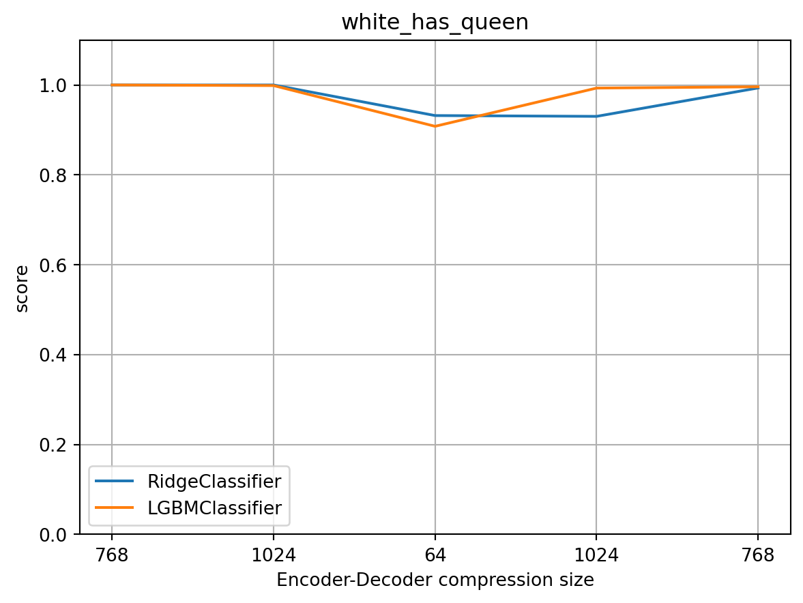
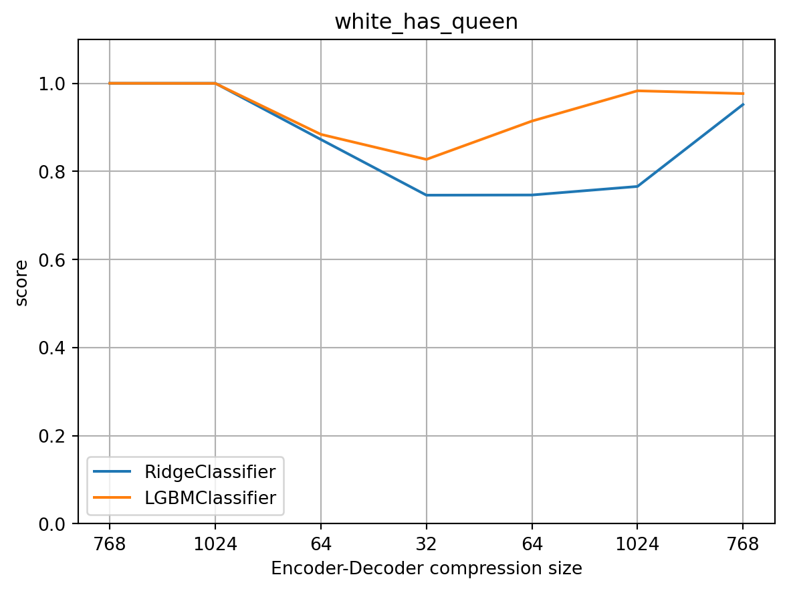
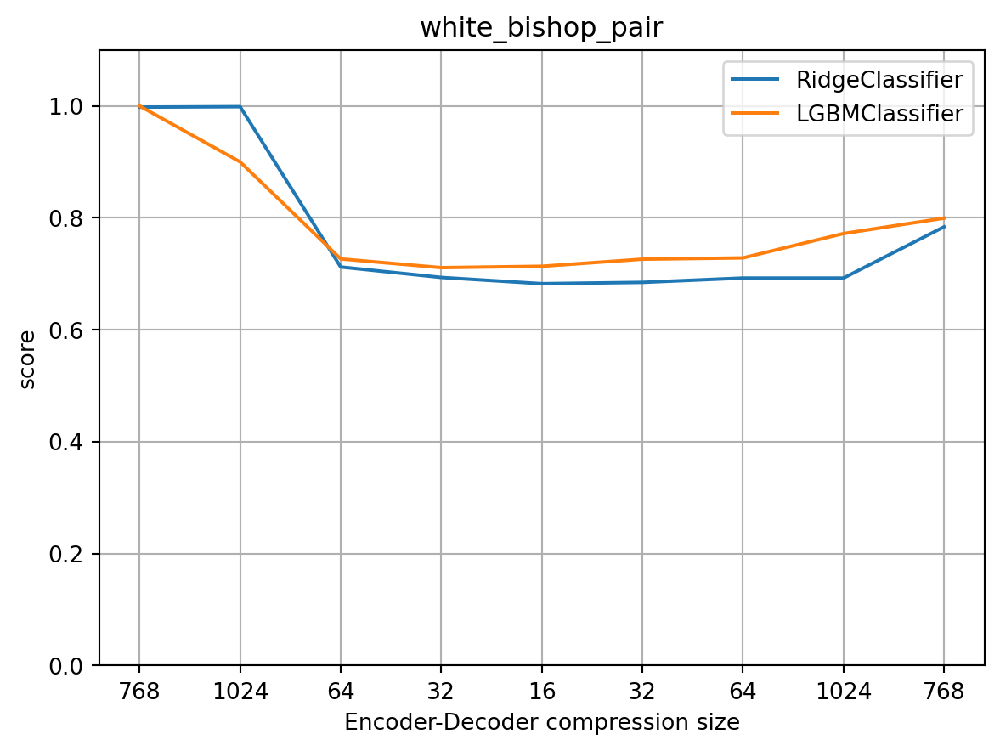

Stockfish Explainability
1 Explainability and Stockfish
1.1 Introduction
This document is a work in progress. It is intended to be a guide to the explainability features of Stockfish. It is not intended to be a guide to Stockfish itself. For that, please see the (Stockfish 2022) documentation.
1.2 What is Explainability?
Explainability is the ability to understand why a machine learning model makes the decisions it does. It is a key component of the Explainable AI movement. It is also a key component of the Fairness, Accountability, and Transparency
1.3 Explainability Methods
In the quest to understand why a machine learning model makes the decision it does we want to find out what it has learnt. The methods we will be using to explain Stockfish are:
- Feature Importance
- Saliency Maps
- Concept Probing
2 Chess
2.1 Concepts from Stockfish
- Material
- Imbalance
- Pawns
- Knights
- Bishops
- Rooks
- Queens
- Mobility
- King Safety
- Threats
- Passed Pawns
- Space
- Winnable
2.2 Implemented Concepts
All concepts are implemented for both white and black.
- white_bishop_pair - Is true if white has a bishop pair
- white_knight_pair - Is true if white has a knight pair
- white_double_pawn - Is true if white has a double pawn
- white_isolated_pawn - Is true if white has an isolated pawn
- white_connected_rooks - Is true if white has connected rooks
- white_rook_on_open_file - Is true if white has a rook on an open file
- has_contested_open_file - Is true if there is a contested open file
- current_player_is_forking - Is true if the current player is forking
- current_player_can_fork - Is true if the current player can fork
- current_player_is_checking - Is true if the current player is checking
- current_player_can_check - Is true if the current player can check
- material imbalance - The material imbalance
3 Concept Probing
In this chapter we will compare various probing methods:
- Ridge Classifier
- LightGBM
Methods suggested in (McGrath et al. 2021):
- data-dependent sparcity using Gated Linear Networks
- information-theoretic regularization using the information bottleneck
- minimum description length probing
- Bayesian probing
3.1 Comparing concept probing methods
Here we will evaluate the concept probing methods and consider what they tell us about the model. There are numerous challenges related to concept probing, e.g.:
- How can we find the best concept probing method?
When we are evaluating concept probing methods, what we really want to reveal, is how important is a concept to a given model. If the representation of a concept emerges in the hidden representations of a model, then we can infer that the concept is of some usefulness to predict.
We seek only to reveal what the model has learnt.
- When can we really know if a concept is being used? Even if a concept is linearly separable, how can we know if it is being used?
Inferring that if a concept is linearly separable then it is being used by the model can sometime be misleading. For example if a concept is linearly separable in the input space, but not useful to the model, it is possible that the model is conserving some non-useful information in the hidden representation. We have not yet quantified this problem.
- When is a probing method too simple?
If a probing method is too simple, it may not correctly reveal the degree of which the concept is being used.
For example, simpler probing methods might not be able to handle problems related to sparsity, e.g. if a concept is most often present under a given condition, which is not a confounding factor, then the probing method may not be able to detect the concept.
From (McGrath et al. 2021): “… consider a channel representing the possibility of capturing the opponent’s queen by a positive activation at the position of the queen and zero activations otherwise. There are locations on the board in which the queen is more likely to be captured than other locations, and therefore there are levels of sparsity that lead to positive regression weights only at the positions where the queen is most likely to be captured.”
- When is a probing method too complex?
Some have argued that it is important to keep the capacity of the regression model low (McGrath et al. 2021) to ensure that the probing method is capturing the structure of the probed model instead of learning its own structure.
So given one extreme case, where we probe for a concept in the input layer with a very powerful model, the model will learn its own relationships, regardless of the models representations. In the earlier layers of the model, where some non-useful information is still being represented in the hidden layers, i.e. the non-useful information has not been dissolved by the model, the same situation can occur.
3.1.1 Autoencoder Experiment
This experiment is intended to shed a light on a comparison between different probing architectures. When probing for a concept, it is often hard to know the ground trouth, i.e. to what extend the concept is present. However, if we use an autoencoder, that compresses the input space and successfully reconstructs it, we know that the concepts are somehow represented in the hidden layers of the autoencoder.
This is relevant when probing a small neural network, such as Stockfish’ NNUE, where the concept representations are much more compressed than in a large neural network.
Here we seek to understand better when a probing method is too simple and giving lower probing accuracy than more powerful probing methods.
One key insight gained throught this experiment is just how valuable concept probing is to evaluating the reconstruction properties of generative models.
3.1.1.1 The Autoencoder
The autoencoder consists of two parts, an encoder and a decoder which are trained to reconstruct the input space. The encoder and decoder mirror each other in terms of the number of layers and the number of neurons in each layer. The design uses a sequence of fully connected linear layers with ReLU activations.
The input into the autoencoder is tensor of size 768, or 64(squares) * 6(piece types) * 2(color).
3.1.1.2 Small Autoencoder
Code
from stockfish_explain.experiments.chess_auto_encoder.utils import plot_results
import pandas as pd
df_results = pd.read_pickle('stockfish_explain/experiments/chess_auto_encoder/data/df_results_small.pkl')
plot_results(df_results)


3.1.1.3 Medium Autoencoder
Code
from stockfish_explain.experiments.chess_auto_encoder.utils import plot_results
import pandas as pd
df_results = pd.read_pickle('stockfish_explain/experiments/chess_auto_encoder/data/df_results_medium.pkl')
plot_results(df_results)




3.1.1.4 Large Autoencoder
Code
from stockfish_explain.experiments.chess_auto_encoder.utils import plot_results
import pandas as pd
df_results = pd.read_pickle('stockfish_explain/experiments/chess_auto_encoder/data/df_results_large.pkl')
plot_results(df_results)

